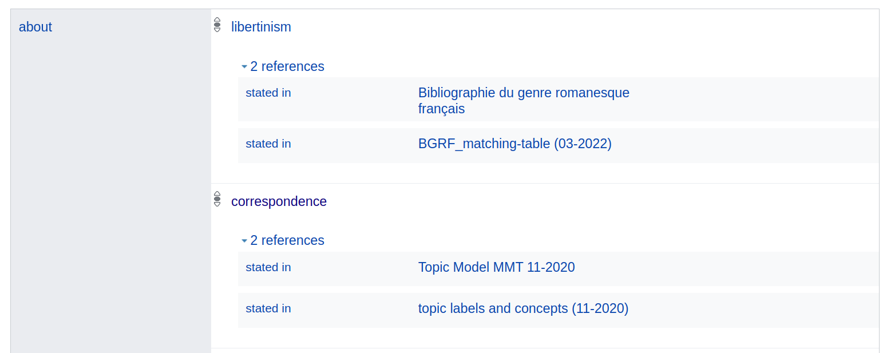
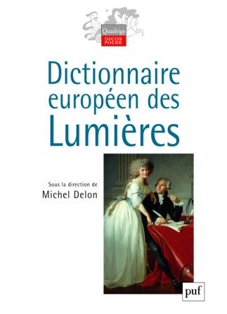

# De l'histoire littéraire comme réseau : le projet Mining and Modeling Text <img height="60" data-src="img/basics/mimotext-logo.png"> <br/> <hr/> <p>Christof Schöch<br/>avec Maria Hinzmann, Julia Röttgermann,<br/>Tinghui Duan, Anne Klee, Moritz Steffes, et d'autres</p> <br/> <p><a href="https://mimotext.uni-trier.de/en">https://mimotext.uni-trier.de/en</a></p> <p><strong><emph>Digital Romanistics, Basel</emph> | 11.05.2023</strong></p> <hr/> <img height="50" data-src="img/basics/tcdh-slim.png"> <img height="50" data-src="img/basics/uni-trier.png"> <img height="50" data-src="img/basics/mwrlp.svg"> :: - Bonjour et bienvenu(e)s à cette conférence - Le sujet aujourd'hui: les linked open data et l'histoire littéraire - Partager nos expériences dans un projet collaboratif à l'université de Trèves - Collaboration de NLP, informatique, études littéraires, humanités numériques - C'est un projet en cours, qui dure encore jusqu'à la fin de l'année - C'est coordonné par moi au Trier Center for Digital Humanities - Le financement, sur 4 ans, vient de l'état de Rhénanie-Palatinat -- ## Structure 1. [Introduction – L'histoire littéraire en réseau](#/2) 3. [Mining – L'extraction d'informations](#/3) 4. [Modeling – La représentation des informations](#/4) 5. [Conclusion – Avantages et difficultés](#/5) :: - Je commence par une introduction au projet et un peu de contexte - Mining: comment nous obtenons les informations à partir des sources - Modeling: comment nous représentons les informations, - dans le but de les mettre en réseau, de les relier entr-eux - "Mining" et "Modeling" se passent cependant en parallèle, pas l'un après l'autre -- ## (1) Introduction – <br/>L'histoire littéraire en réseau --- #### Contexte: Trier Center for Digital Humanities <a href="https://tcdh.uni-trier.de/en"><img height="320" data-src="img/tcdh.png"></a> - Centre de recherche en humanités numériques fondé en 1998 - Trois domaines de recherche - Édition de textes et lexicographie numériques - Infrastructures et outils de recherche - Études littéraires et culturelles computationelles - En savoir plus: https://tcdh.uni-trier.de/en :: - Projet est mené au TCDH - TCDH: Fondée en 1998, par Kurt Gärtner; - Dirigé par Claudine Moulin depuis 2003; avec moi depuis 2017. - Les trois domaines de recherche principaux - Environ 30 chercheuses et chercheurs - Bien plus de cent projets menés à bien --- #### MiMoText: première approche <a href="img/overview_eng.jpg"><img height="450" data-src="img/overview_eng.jpg"></a> <br/><a href="https://mimotext.uni-trier.de/en">https://mimotext.uni-trier.de/en</a> :: - Objet d'étude: le roman francais du 18e siècle; - trois sources d'informations - metadonnées bibliographiques, source: BGRF (années 1970s) - savoirs établis par l'historiographie littéraire, source: publications scientifiques (sur l'histoire littéraire) - propriétés des textes primaires, source: un corpus de romans - Le but général: - extraire des informations des ces sources (hétérogènes) - les modéliser en linked open data (homogène) - les mettre en réseau sous forme d'une instance Wikibase propre - Tout est entièrement ouvert: corpus, méthodes, publications, ressources, résultats. - Mais quelles informations inclure ? --- #### Qu'est-ce que l'historiographie littéraire ? - Objectifs <!-- .element: class="fragment" data-fragment-index="1" --> - Collectionner et documenter des faits (?) sur l'histoire littéraire - En déduire l'évolution de l'histoire littéraire - En déduire des explications pour cette évolution <br/><br/> - Principes d'organisation <!-- .element: class="fragment" data-fragment-index="2" --> - Nations / langues, périodes, mouvements, genres, auteurs - Similarités et différences - continuités et ruptures <br/><br/> - Explications pour l'évolution littéraire <!-- .element: class="fragment" data-fragment-index="3" --> - contexte culturel et socio-historique - dynamique interne du système littéraire - production continue d'innovation / d'intérêt :: - Question fondamentale, à laquelle nous revenons constamment - Expliquer les points sur les slides - Au final: très peu d'accord sur les principes - Et surtout : très peu d'accord sur les informations fondamentalement pertinentes de l'histoire littéraire - Alors, on se demande: - Quelles informations devrait-on relever ? - Quelles informations pouvons-nous relever ? - Une source d'inspiration pourraient être d'autres projets similaires --- #### Projet précurseur : la BDHL <img height="300" data-src="img/bdhl.png"> - Henri Béhar (Paris III), à partir de 1985 (!) - 500 auteurs, 2000 oeuvres - métadonnées, dont genres / sous-genres et canonicité :: - Henri Béhar, pionnier des humanités numériques - BDHL comme précurseur - auteurs, oeuvres, genres / sous-genres, thèmes, éditeurs, prix - interactif, statistique - particularité: données sur la canonicité à travers les manuels scolaires et universitaires - Mais c'est aussi une sorte d'avertissement - très focalisé sur les oeuvres canoniques (500 auteurs, 2000 oeuvres) - => comment assurer qu'une telle ressource reste pertinente par rapport aux études littéraires telles qu'elles évoluent ? - pas ouvert dans le sens du travail collaboratif - => comment assurer que la base reste ouverte au contexte des données existants ailleurs (LOD, donnés d'autorité) - n'est plus maintenu, plus fonctionnel - => Comment intégrer la ressource dans des infrastructures plus générales --- #### Projets voisins : histoire du livre / de la littérature <a href="img/mediate.png"></a> - MPCE: Mapping Print, Charting Enlightenment (Simon Burrows, Univ. of Sydney) - MEDIATE: Measuring Enlightenment. Disseminating Ideas, Authors and Texts in Europe, 1665-1830 (Alicia Montoya, Radboud University) - MODERN: Modelling Enlightenment. Reassembling Networks of Modernity through data-driven research (Glenn Roe, Paris-Sorbonne) :: - projets très pertinents, axés plus sur l'histoire du livre, et l'époque des Lumières - mais développant bien sur des bases de données avec potentiellement beaucoup d'informations pertinentes pour MiMoText aussi. - Cependant, pas vraiment pensés dans l'esprit de la science ouverte (plus pour MEDIATE que pour MPCE, peut-être) - MPCE: tjs pas disponible; MEDIATE: version préliminaire, seulement avec un compte. - et MODERN, bien sûr ! On verra bien ce qu'on pourrait faire ensemble. --- #### Quelles informations sont pertinentes et disponibles ? - Ressources bibliographiques <!-- .element: class="fragment" data-fragment-index="1" --> - Métadonnées : auteurs, oeuvres, éditeurs, etc. (histoire du livre) - Mots-clés (dans la BGRF): lieu, thèmes, protagonistes, tonalité <br/><br/> - Historiographie littéraire <!-- .element: class="fragment" data-fragment-index="2" --> - Résumés portant sur l'histoire racontée, les thèmes - Description / classements en terme de genre, période, style, etc. - Déclarations sur les relations entre auteurs, entre oeuvres - Jugements de valeur sur les auteurs et les oeuvres <br/><br/> - Romans <!-- .element: class="fragment" data-fragment-index="3" --> - la longeur des textes - lieu de l'action (NER) - les noms des personnages (NER, réseaux) - les thèmes (Topic Modeling) - la tonalité (Sentiment Analysis) - la proportion du discours direct des personnages (ML) - la similarité entre les romans (stylométrie) - etc. :: - Structuré selon les trois axes du projet - Une certaine tension entre ce qui est pertinent et ce qui est possible - Cela devient intéressant, quant on a plusieurs sources d'informations pour le même type d'informations - Exemples: - Thèmes selon publications scientifiques vs. Topic Modeling; - lieux de l'action selon BGRF vs. Named Entity Recognition sur les romans --- #### Objectifs du projet - Notre objectif : "Wikidata pour l'histoire littéraire" <!-- .element: class="fragment" data-fragment-index="1" --> - Un système d'information sur l'histoire littéraire - Rôle central des taxonomies, ontologies, fichiers d'autorité - Basé sur le LOD, avec interface explorative et SPARQL-endpoint - À la différence de Wikidata : <!-- .element: class="fragment" data-fragment-index="2" --> - Beaucoup plus focalisé sur un domaine (roman francais 1750-1800) - Meilleure couverture pour ce domaine - Plus grande densité des assertions pour ce domaine - Basé sur une modélisation explicite des données - Facilitér des scénarios d'analyse poussés :: - Le challenge : comment obtenir et relier ces informations? - Pour réaliser ces objectifs ? - Nous le verrons maintenant - obtenir => Mining - relier => Modeling -- ## (2) Mining - <br/>L'extraction d'informations --- ### Axe 1 : La _Bibliographie du genre romanesque français_ <a href="img/bgrf-Candide.png"><img height="400" src="img/bgrf-Candide.png"></img></a> - Martin / Mylne / Frautschi: <em>Bibliographie<br/> du genre romanesque français, 1751-1800</em>, 1977 - Version en RDF: https://doi.org/10.5281/zenodo.3401428 (2019) :: - Bibliographie presque exhaustive, établie sur plusieurs années - L'image montre une entrée parmi les 2500 entrées; Candide de Voltaire - (Cet ouvrage va revenir plusieurs fois dans la suite de la présentation) - On voit un peu quelles informations sont contenues dans la bibliographie - métadonnées bibliographiques - informations sur le contenu: protagonistes, lieux, thèmes, histoire, tonalité. - histoire éditoriale: rééditions --- #### La BGRF en RDF <a href="img/bgrf-Candide-RDF.png"><img height="500" src="img/bgrf-Candide-RDF.png"></img></a> :: - On a numérisé et modélisé tout cela en RDF en 2019 (Andreas Lüschow). - Processus de OCR, puis annotation partielle, puis machine learning - Puis modélisation: chaque morceau d'information est liée à un élément dans une Ontologie - Différents modules de la famille des ontologies SPAR. - Maintenant : tout est transféré dans notre instance Wikibase --- #### Combien d'informations se trouvent dans la BGRF ? * Quelques statistiques (sur base de notre version en RDF) <!-- .element: class="fragment" data-fragment-index="1" --> - ~1100 auteur(e)s différent(e)s - ~2600 entrées (romans) - ~58.000 pièces d'information (22 / roman) <br/><br/> - Autres informations disponibles <!-- .element: class="fragment" data-fragment-index="2" --> - ~720 romans à la première personne - ~920 romans à la troisième personne - ~2210 entrées avec des informations sur le contenu (les mots-clés) :: - Expliquer d'abord les statistiques - Quelques remarques supplémentaires - La bibliographie représente la fondation du projet: les auteurs et les ouvrages. - C'est une bibliographie exhaustive: pas de limitations qui dépendent du prestige ou de la notoriété des auteurs (autre que le processus historique) - Quand nous relevons d'autres informations, elles sont toujours reliées à ces auteurs et ouvrages; le coeur du réseau, en quelque sorte --- ### Axe 2 : Les textes littéraires (romans) - Corpus de romans français du dix-huitième siècle (1751-1800) <!-- .element: class="fragment" data-fragment-index="1" --> - Dirigée par Julia Röttgermann - Disponible en ligne: https://github.com/mimotext/roman18 <br/><br/> - Analyses du corpus <!-- .element: class="fragment" data-fragment-index="2" --> - Topic Modeling, pour obtenir les thèmes les plus pertinents de chaque roman - Named Entity Recognition, pour obtenier les lieux de l'action - etc. :: - Corpus établi par Julia Röttgermann. - Source de 'statements' à travers plusieurs analyses --- #### Le corpus de romans français du 18e siècle (1751-1800) <img height="400" src="img/roman18.jpg"></img> <br/><p>Corpus de romans français du dix-huitième siècle (1750-1800)<br/>dirigée par Julia Röttgermann. </p> :: - Différentes sources, du TEI tout prêt au livre à scanner - Double keying pour un groupe de roman, modèle OCR adaptée pour OCR4all. - Disponible ouvertement sur Github et Zenodo - Effort de suivre les principes FAIR - Améliorations encore en cours, mais en principe, le corpus est prêt --- #### Topic Modeling - Quelques résultats <a href="img/pilot_mod200_fr_10_500_expStop.html"></img></a> :: - Quelques topics: famille, philosophie, amour, monarchie, sexualité, lire/écrire, mort, etc. - Pour chaque roman, nous retenons les 5 topics avec la plus grande probabilité (c'est arbitraire, mais utile) - Le modèle entier est aussi disponible en ligne, bien sûr. --- #### Deux topics majeurs <br/> "monarchie" "amour" <br/><img height="250" src="img/topic_002.png"></img> <img height="250" src="img/topic_009.png"></img> - Pour chaque roman du corpus : les 5 topics principaux - Les étiquettes viennent d'un vocabulaire contrôlée multilingue :: - Tout d'abord, il faudrait dire que les topics != thèmes - Cependant, les topics expriment quand même les préoccupations thématiques des romans, y inclus le personnel, le setting etc. - Chaque topic a besoin d'une étiquette, c'est un processus manuel - L'attribution des étiquettes s'appuie sur un vocabulaire contrôlée de termes - Le vocabulaire est dérivée du Dictionnaire européen des Lumières - Nous l'avons complété et traduit en allemand et anglais (multilingue!) - En plus de l'étiquette, on peut voir les mots les plus probables de chaque topic; - Pour plus de transparende, le modèle entier est disponible aussi --- ### Axe 3: L'historiographie littéraire - Objectif : obtenir des assertions pertinentes de l'historiographie littéraire <!-- .element: class="fragment" data-fragment-index="1" --> - Dans une première étape : des chapitres / panoramas sur le roman du 18e <!-- .element: class="fragment" data-fragment-index="2" --> - Une approche qui allie annotation manuelle et machine learning <!-- .element: class="fragment" data-fragment-index="3" --> - Des guides d'annotation (en lien avec le modèle de données) - Une annotation manuelle (assertions + données d'entraînement) - En s'appuyant sur une instance INCEPTION reliée à la Wikibase - (Ensuite : entraînement d'un algorithme de reconnaissance automatique) :: - on voit ici un peu la complexité de la tâche - le guide d'annotation dépend du modèle des données - mais le modèle des données dépend aussi de l'experience d'annotation - les assertions annotéés peuvent être rentrés dans la Wikibase - mais elles doivent servir aussi comme données d'entraînement - (C'est une étape sur laquelle on travaille encore) --- #### Exemple d'une annotation au niveau 'Named Entity' <a href="img/inception_Candide-disambiguation.png"><img height="350" src="img/inception_Candide-disambiguation.png"></img></a> - Annotation des auteurs et des ouvrages (sujet ou objet dans les assertions) - Entités sont liés à des fichiers d'autorité (MiMoTextBase / Wikidata) :: - L'annotation relie les entités aux fiches d'autorité - (cela peut être notre instance Wikibase, ou bien Wikidata plus généralemnet) - elle contient les auteurs et oeuvres de la BGRF essentiellement - Cela permet, entre autres, de désambiguiser les entités. --- #### Annotation au niveau 'Predicate' <a href="img/inception_genre.png"></img></a> - Dans l'exemple, c'est le prédicat "hasGenre" qui est utilisé - Sujet: Bélisaire (Wikidata: Q5005038) * Objet: "novel / roman" (Wikidata: Q8261) :: - "hasGenre" est un prédicat défini dans notre propre ontologie - Dans Wikidata, il y bien "genre" (Q483394) et "literary genre" (Q223393), mais c'est une entité, pas un prédicat - Mais on s'approche de plus en plus de la question de la modélisation des données - Autant en parler explicitement. -- ## (3) Modélisation – <br/>La mise en réseau des données --- #### Approche de modélisation : Linked Open Data (LOD) <img height="400" data-src="img/rdf11-primer-example-graph.jpg"> Source: <br/><a href="https://www.w3.org/TR/rdf11-primer/">https://www.w3.org/TR/rdf11-primer/</a> :: - On voit des entités, comme des personnes, des oeuvres, etc. - Et on voit des liens entre les entités, comme "is interested in" ou "is a friend of" - C'est le principe des Linked Open Data - C'est aussi à la base de Wikidata, le pendant côté données de Wikipédia. --- #### Modélisation S-P-O dans MiMoText <a href="img/candide_S-P-O.png"><img height="500" src="img/candide_S-P-O.png"></img></a> --- #### Quelques principes de la modélisation - Linked Open Data <!-- .element: class="fragment" data-fragment-index="1" --> - Un grand nombre d'assertions simples - Une structure en triplets: sujet, prédicat, objet - Un inventaire d'entités, mais surtout un inventaire de prédicats <br/><br/> - Les entités (sujets) fondamentaux en histoire littéraire <!-- .element: class="fragment" data-fragment-index="2" --> - les personnes (auteurs, éditeurs, imprimeurs, etc.) - les publications (littérature primaire, littérature scientifique) - les événements (naissance, mort, publication, réception) - plus compliqué: les entités objets (e.g. genres, styles) et les prédicats :: - Simplement expliquer les points sur le slide. --- #### Quelques exigences du LOD - Fiches d'autorité / standards <!-- .element: class="fragment" data-fragment-index="1" --> - Wikidata IDs, principalement - Mais aussi : BGRF, GND, Getty TGN, etc. - Standards comme RDF, XML-TEI, etc. <br/><br/> - Ontologies de prédicats et d'objets <!-- .element: class="fragment" data-fragment-index="2" --> - Vocabulaire + structure pour assertions thématiques - Vocabulaire + structure pour assertions sur forme narrative - 11 modules, voir : https://github.com/MiMoText/ontology <br/><br/> - Un esprit d'ouverture et de transparence <!-- .element: class="fragment" data-fragment-index="3" --> - Usage exclusif de logiciels libres (OCR4all, Inception, Wikibase, etc.) - Mises en ligne continuelles ("release early, release often") - Les sources des assertions sont indiquées - Tout est amplement documenté (Tutoriel, etc.) :: - (Simplement expliquer les points.) --- #### Patrons d'assertions (1): simples / bibliographiques - {person} _author_of_ {publication} <br/><br/> - {publication} _place_of_publication_ {place} <br/><br/> - {publication} _publication_date_ {year} <br/><br/> - {publication} _instance_of_ "literary work" (Q2) :: - simples métadonnées bibliographiques - peu de discussion sur l'ontologie --- #### Patrons d'assertions (2) : simples, analytiques - {publication} _narrative_location_ {place}, {place}, {place}, ... <br/><br/> - {publication} _characters_string_ {string de la BGRF} <br/><br/> - {publication} _full_work_available_at_ {lien vers texte dans notre corpus} :: - Simples, parce que le prédicat est clair, et l'objet peut être dérivé de la source --- #### Patrons d'assertions (3) : interprétatifs - {publication} _narrative_form_ {autodiegetic | homodiegetic | heterodiegetic | epistolary | dialogue | mixed} <br/><br/> - {publication} _about_ {thème du vocabulaire thématique}, {thème}, {thème}, ... <br/><br/> :: - Compliqueés, avant tout parce que l'objet demande une ontologie ou un vocabulaire contrôlé - Aussi, parce qu'il faut appliquer le vocabulaire aux informations que nous avons - Une sorte de diversity paradox - Le multilinguisme des vocabulaires et les difficultés de la traduction --- #### Méta-assertions : sources </img> - [ {publication} _about_ {thème} ] _stated_in_ {source} :: - Pour beaucoup d'assertions, il y a une source - BGRF, un topic model spécifique, une analyse NER, etc. - Souvent : passage de la source et une abstraction modélisée - C'est souvent intéressant de comparer les informations sur un point donnée mais venant de différentes sources (assertions, pas "faits"!) -- ## (4) Illustration – Navigation<br/> et requêtes dans la MiMoTextBase --- #### La MiMoTextBase <a href="http://data.mimotext.uni-trier.de/wiki/Main_Page"><img height="450" src="img/mimotextbase.png"></img></a> - http://data.mimotext.uni-trier.de :: - Commencer par les exemples: - author: très peu d'infos, mais: "exact_match" (!) => Wikidata - title: beaucoup d'informations! données + strings, différentes sources; méta-assertions. - On peut chercher à travers la mimotext Base, mais c'est pas très bien => SPARQL --- #### Le SPARQL endpoint <a href="img/sparql_results1.png"><img height="350" src="img/sparql_results1.png"></img></a> - SPARQL = SPARQL Protocol and RDF Query Language - Pour formuler des requêtes complexes à travers des bases de données LOD - https://query.mimotext.uni-trier.de --- #### Quelques exemples - Requêtes simples - [Liste des romans avec quelques informations de la BGRF](https://query.mimotext.uni-trier.de/#%23%20Query%20to%20retrieve%20some%20data%20about%20the%20MiMoTextBase%20such%20as%20Authors%2C%20Novels%2C%20publicationyears%2C%20tonality%20etc.%0Aprefix%20wd%3A%3Chttp%3A%2F%2Fdata.mimotext.uni-trier.de%2Fentity%2F%3E%0Aprefix%20wdt%3A%3Chttp%3A%2F%2Fdata.mimotext.uni-trier.de%2Fprop%2Fdirect%2F%3E%20%0ASELECT%20DISTINCT%20%3Fbgrf%20%3Fitem%20%3Fauthorlabel%20%3FitemLabel%20%3Fyear%20%3Fnarrpers%20%3Ftonality%20%3Fpages%20%3Fnormalized%20WHERE%20%7B%0A%20%3Fitem%20wdt%3AP5%20%3Fauthor%3B%20%23%20who%20is%20the%20author%3F%0A%20%20%20%20%20%20%20wdt%3AP4%20%3Ftitle%3B%20%23%20what%20is%20the%20title%3F%0A%20%20%20%20%20%20%20wdt%3AP22%20%3Fbgrf%3B%20%20%23%20what%20is%20the%20identifier%20in%20the%20bibliographic%20metadata%3F%0A%20%20%20%20%20%20%20wdt%3AP9%20%3Fdate%3B%20%23%20what%20is%20the%20publication%20date%3F%0A%20OPTIONAL%20%7B%0A%20%20%20%3Fitem%20wdt%3AP27%20%3Fnarrpers%3B%20wdt%3AP31%20%3Ftonality%3B%20wdt%3AP25%20%3Fpages.%20%0A%20%7D%0A%20BIND%28YEAR%28%3Fdate%29%20as%20%3Fyear%29.%0A%20BIND%28if%28bound%28%3Fnarrpers%29%2C%20%3Fnarrpers%2C%20%22unbekannt%22%29%20as%20%3Fnormalized%29%0A%20%3Fauthor%20rdfs%3Alabel%20%3Fauthorlabel.%0A%20FILTER%28LANG%28%3Fauthorlabel%29%20%3D%20%22en%22%29%0A%20SERVICE%20wikibase%3Alabel%20%7B%20bd%3AserviceParam%20wikibase%3Alanguage%20%22%5BAUTO_LANGUAGE%5D%2C%20fr%22.%20%7D%0A%7D%20ORDER%20BY%20%3Fyear) - [Le nombre d'ouvrages écrits par chaque auteur](https://query.mimotext.uni-trier.de/#%23%20Get%20the%20count%20of%20written%20novels%20per%20authors%0APREFIX%20wd%3A%3Chttp%3A%2F%2Fdata.mimotext.uni-trier.de%2Fentity%2F%3E%0APREFIX%20wdt%3A%3Chttp%3A%2F%2Fdata.mimotext.uni-trier.de%2Fprop%2Fdirect%2F%3E%0A%0ASELECT%20%3FauthorName%20%28count%20%28%3FauthorName%29%20as%20%3Fcount%29%0AWHERE%20%7B%0A%20%20%20%3Fwork%20wdt%3AP5%20%3Fauthor%20.%20%23%20work%20has%20author.%0A%20%20%20%3Fauthor%20rdfs%3Alabel%20%3FauthorName%20.%20%23%20get%20author%20label%20%28not%20only%20Link%20to%20author%29%0A%20%20%20FILTER%28LANG%28%3FauthorName%29%20%3D%20%22en%22%29%20%23%20other%20options%3A%20%22fr%22%2C%20%22de%22.%20Filter%20is%20needed%20as%20there%20is%20more%20than%20one%20label%20%28language%20dependent%29%0A%7D%0A%0Agroup%20by%20%3FauthorName%0Aorder%20by%20desc%20%28%3Fcount%29%0A%0A) - [Les thèmes des romans, en francais](https://query.mimotext.uni-trier.de/index.html#%23defaultView%3ABubbleChart%0Aprefix%20wd%3A%3Chttp%3A%2F%2Fdata.mimotext.uni-trier.de%2Fentity%2F%3E%0Aprefix%20wdt%3A%3Chttp%3A%2F%2Fdata.mimotext.uni-trier.de%2Fprop%2Fdirect%2F%3E%20%0ASELECT%20%3FtopLabel%20%28count%28%2a%29%20as%20%3Fcount%29%0AWHERE%20%7B%0A%20%3Fitem%20wdt%3AP36%20%3Ftop%20.%0A%20%3Ftop%20rdfs%3Alabel%20%3FtopLabel%20.%0A%20filter%28lang%28%3FtopLabel%29%20%3D%20%22fr%22%29%0A%7D%0AGROUP%20BY%20%3FtopLabel%0AORDER%20BY%20desc%28%3Fcount%29) ainsi qu'[en allemand](https://query.mimotext.uni-trier.de/index.html#%23defaultView%3ABubbleChart%0Aprefix%20wd%3A%3Chttp%3A%2F%2Fdata.mimotext.uni-trier.de%2Fentity%2F%3E%0Aprefix%20wdt%3A%3Chttp%3A%2F%2Fdata.mimotext.uni-trier.de%2Fprop%2Fdirect%2F%3E%20%0ASELECT%20%3FtopLabel%20%28count%28%2a%29%20as%20%3Fcount%29%0AWHERE%20%7B%0A%20%3Fitem%20wdt%3AP36%20%3Ftop%20.%0A%20%3Ftop%20rdfs%3Alabel%20%3FtopLabel%20.%0A%20filter%28lang%28%3FtopLabel%29%20%3D%20%22de%22%29%0A%7D%0AGROUP%20BY%20%3FtopLabel%0AORDER%20BY%20desc%28%3Fcount%29) <br/><br/> - Requêtes avec visualisation - [Nombre de romans publiés par année](https://query.mimotext.uni-trier.de/#%23%20Query%20to%20retrieve%20the%20first%20publication%20dates%20of%20all%20French%20novels%201751-1800%0Aprefix%20wd%3A%3Chttp%3A%2F%2Fdata.mimotext.uni-trier.de%2Fentity%2F%3E%20%0Aprefix%20wdt%3A%3Chttp%3A%2F%2Fdata.mimotext.uni-trier.de%2Fprop%2Fdirect%2F%3E%20%0ASELECT%20%28str%28SAMPLE%28year%28%3Fdate%29%29%29%20as%20%3Fyear%29%20%28COUNT%28%2a%29%20AS%20%3Fcount%29%0AWHERE%20%7B%0A%20%20%20%3Fitem%20wdt%3AP9%20%3Fdate%20.%0A%7D%0AGROUP%20BY%20%3Fdate%0AORDER%20BY%20DESC%28%3Fdate%29) - [Les auteurs de romans (par date de naissance, avec portraits)](https://query.mimotext.uni-trier.de/#%23%20show%20authors%2C%20their%20Wikidata%20match%2C%20their%20birth%20dates%20in%20a%20timeline%20%0A%23defaultView%3ATimeline%0APREFIX%20wid%3A%20%3Chttp%3A%2F%2Fwww.wikidata.org%2Fentity%2F%3E%20%23wikidata%20prefix%20definition%20for%20entity%0APREFIX%20widt%3A%20%3Chttp%3A%2F%2Fwww.wikidata.org%2Fprop%2Fdirect%2F%3E%20%23wikidata%20prefix%20definition%20for%20property%0Aprefix%20wd%3A%3Chttp%3A%2F%2Fdata.mimotext.uni-trier.de%2Fentity%2F%3E%20%23mimotext%20prefix%20for%20entity%20is%20wd%0Aprefix%20wdt%3A%3Chttp%3A%2F%2Fdata.mimotext.uni-trier.de%2Fprop%2Fdirect%2F%3E%20%23mimotext%20prefix%20for%20property%20is%20wdt%0ASelect%20%3Fauthor%20%3FauthorLabel%20%3FwikiLink%20%3Fbirth%20%3Fimage%20%0A%7B%0A%20%20%3Fauthor%20wdt%3AP11%20%3Foccupation.%0A%20%20%3Fauthor%20wdt%3AP13%20%3FwikiLink.%0A%20%20%3Fauthor%20rdfs%3Alabel%20%3FauthorLabel%0A%20%20Filter%28lang%28%3FauthorLabel%29%20%3D%20%22en%22%29%0A%20%20%20%20%20%20%20%20%20%20%0A%20%20SERVICE%20%3Chttps%3A%2F%2Fquery.wikidata.org%2Fsparql%3E%20%7B%0A%20%20%20%20%3FwikiLink%20widt%3AP569%20%3Fbirth.%20%0A%20OPTIONAL%7B%20%20%20%3FwikiLink%20widt%3AP18%20%3Fimage.%7D%0A%0A%20%20%7D%0A%20%20%20%20%20%20%20%20%20%20%20%0A%7D%0A) - [La forme narrative des romans par quantité (Bubble chart)](https://query.mimotext.uni-trier.de/#%23%20Query%20to%20retrieve%20the%20narrative%20perspectives%20of%20the%20novels.%0Aprefix%20wd%3A%3Chttp%3A%2F%2Fdata.mimotext.uni-trier.de%2Fentity%2F%3E%0Aprefix%20wdt%3A%3Chttp%3A%2F%2Fdata.mimotext.uni-trier.de%2Fprop%2Fdirect%2F%3E%0Aprefix%20rdfs%3A%20%3Chttp%3A%2F%2Fwww.w3.org%2F2000%2F01%2Frdf-schema%23%3E%0ASELECT%20%28count%28%3FnarrativePerspectiveLabel%29%20as%20%3Fcount%29%20%3FnarrativePerspectiveLabel%20%0AWHERE%0A%7B%0A%20%20%3Fwork%20wdt%3AP33%20%3FnarrativePerspective.%20%23%20work%20%28novel%29%20has%20property%20P33%20%28narrative%20perspective%29%0A%20%20%3FnarrativePerspective%20rdfs%3Alabel%20%3FnarrativePerspectiveLabel.%20%23%20using%20of%20rdfs%3Alabel%20to%20display%20labels%0A%20%20%0A%20%20FILTER%28lang%28%3FnarrativePerspectiveLabel%29%20%3D%20%22en%22%29%20%23%20filter%20is%20neccessary%20to%20display%20only%20one%20occurence.%20Other%20possibilites%20would%20be%20%22en%22%20or%20%22de%22.%0A%20%20SERVICE%20wikibase%3Alabel%20%7B%20bd%3AserviceParam%20wikibase%3Alanguage%20%22%5BAUTO_LANGUAGE%5D%2C%20en%22.%20%7D%0A%20%0A%7D%0A%0Agroup%20by%20%3FnarrativePerspectiveLabel%0A%23defaultView%3ABubbleChart) - [Histoire du livre : formats par année](https://query.mimotext.uni-trier.de/#%23defaultView%3ABarChart%0Aprefix%20wd%3A%3Chttp%3A%2F%2Fdata.mimotext.uni-trier.de%2Fentity%2F%3E%0Aprefix%20wdt%3A%3Chttp%3A%2F%2Fdata.mimotext.uni-trier.de%2Fprop%2Fdirect%2F%3E%20%0ASelect%20%20%28str%28SAMPLE%28year%28%3Fdate%29%29%29%20as%20%3Fyear%29%20%28count%28%3Fformat%29%20as%20%3Fcount%29%20%3Fformat%20%0A%20%20%20WHERE%7B%0A%20%20%20%3Fitem%20wdt%3AP26%20%3Fformat.%0A%20%20%20%3Fitem%20wdt%3AP9%20%3Fdate%20.%0A%20%20FILTER%28lang%28%3Fformat%29%20%3D%20%22fr%22%29%0A%20%20FILTER%28YEAR%28%3Fdate%29%20%3C%201799%29%20%23%20filter%20for%20the%20publication%20date%20of%20interest%0A%23%20FILTER%28lcase%28%3Fformat%29%20%3D%20%2212-in%22%40fr%29%0A%20%20%20%20%20%20Filter%20%28regex%28lcase%28%3Fformat%29%2C%20%22in-%5C%5Cd%2B%5B%5C%5Cs%5C%5CS%5D%22%29%29%0A%20%20%20BIND%28str%28year%28%3Fdate%29%29%20as%20%3Fyear%29%0A%20%20%20SERVICE%20wikibase%3Alabel%20%7Bbd%3AserviceParam%20wikibase%3Alanguage%20%22%7BAUTO_LANGUAGE%7D%22%2C%22fr%22%20.%7D%0A%20%20%7D%0A%0AGROUP%20BY%20%3Fformat%20%3Fyear%20%3Fcount%0A%23having%20%28%3Fcount%3E%202%29%0A) <br/><br/> - Exemple d'une requête fédérée - [Les lieux de l'action de tous les romans (federated query, map)](https://query.mimotext.uni-trier.de/#%23defaultView%3AMap%7B%22hide%22%3A%20%5B%22%3Fnar_loc%22%5D%2C%20%22markercluster%22%3A%22true%22%7D%0APREFIX%20wid%3A%20%3Chttp%3A%2F%2Fwww.wikidata.org%2Fentity%2F%3E%20%23wikidata%20wd%0APREFIX%20widt%3A%20%3Chttp%3A%2F%2Fwww.wikidata.org%2Fprop%2Fdirect%2F%3E%20%23wikidata%20wdt%0APREFIX%20wd%3A%3Chttp%3A%2F%2Fdata.mimotext.uni-trier.de%2Fentity%2F%3E%0APREFIX%20wdt%3A%3Chttp%3A%2F%2Fdata.mimotext.uni-trier.de%2Fprop%2Fdirect%2F%3E%20%0ASELECT%20DISTINCT%20%3Fitem%20%3FitemLabel%20%3Fnar_loc%20%3Fnar_locLabel%20%3FWikiDataEntity%20%3FcoordinateLocation%0AWHERE%20%7B%20%3Fitem%20wdt%3AP32%20%3Fnar_loc.%0A%20%20%3Fnar_loc%20wdt%3AP13%20%3FWikiDataEntity.%0A%20%20%23Federated%20Query%20-%3E%20Wikidata%0A%20%20SERVICE%20%3Chttps%3A%2F%2Fquery.wikidata.org%2Fsparql%3E%20%7B%0A%20%20%20%20%3FWikiDataEntity%20widt%3AP625%20%3FcoordinateLocation%0A%20%20%7D%20%20%20%20%20%20%20%20%20%20%20%0A%20%20SERVICE%20wikibase%3Alabel%20%7B%20bd%3AserviceParam%20wikibase%3Alanguage%20%22en%22%20.%20%7D%0A%7D%0A) <br/><br/> - Comparer les informations de deux sources - [Thèmes du topic modeling](https://query.mimotext.uni-trier.de/embed.html#%23%20Topics%20referenced%20by%20Topic%20Modeling%20(Q21)%0A%23defaultView%3ABubbleChart%0Aprefix%20wd%3A%3Chttp%3A%2F%2Fdata.mimotext.uni-trier.de%2Fentity%2F%3E%0Aprefix%20wdt%3A%3Chttp%3A%2F%2Fdata.mimotext.uni-trier.de%2Fprop%2Fdirect%2F%3E%20%0Aprefix%20ps%3A%3Chttp%3A%2F%2Fdata.mimotext.uni-trier.de%2Fprop%2Fstatement%2F%3E%0Aprefix%20pr%3A%20%3Chttp%3A%2F%2Fdata.mimotext.uni-trier.de%2Fprop%2Freference%2F%3E%0ASELECT%20%3FthemeLabel%0A%20%20%20%20%20%20%20%20(count(*)%20as%20%3Fcount)%20%0AWHERE%0A%7B%0A%20%20%20%20%3Fstatement%20ps%3AP36%20%3Ftheme.%20%23statement%20has%20property%20'about'%0A%20%20%20%20%3Fstatement%20prov%3AwasDerivedFrom%20%3Frefnode.%20%23statement%20has%20a%20reference%0A%20%20%20%20%3Frefnode%20%20%20pr%3AP18%20wd%3AQ21.%20%23reference%20statement%20uses%20'P18'%3Dstated%20in%3B%20stated%20in%3A%20Q21%0A%20%20%20%20SERVICE%20wikibase%3Alabel%20%7B%20bd%3AserviceParam%20wikibase%3Alanguage%20%22en%22.%20%7D%0A%7D%0AGROUP%20BY%20%3FthemeLabel%0AORDER%20BY%20%3Fname%0A) vs. [Thèmes de la BGRF](https://query.mimotext.uni-trier.de/embed.html#%23%20Topics%20referenced%20by%20Bibliographie%20du%20genre%20romanesque%20fran%C3%A7ais%2C%201751-1800%20(Q1)%0A%23defaultView%3ABubbleChart%0Aprefix%20wd%3A%3Chttp%3A%2F%2Fdata.mimotext.uni-trier.de%2Fentity%2F%3E%0Aprefix%20wdt%3A%3Chttp%3A%2F%2Fdata.mimotext.uni-trier.de%2Fprop%2Fdirect%2F%3E%20%0Aprefix%20ps%3A%3Chttp%3A%2F%2Fdata.mimotext.uni-trier.de%2Fprop%2Fstatement%2F%3E%0Aprefix%20pr%3A%20%3Chttp%3A%2F%2Fdata.mimotext.uni-trier.de%2Fprop%2Freference%2F%3E%0ASELECT%20%3FthemeLabel%0A%20%20%20%20%20%20%20%20(count(*)%20as%20%3Fcount)%20%0AWHERE%0A%7B%0A%20%20%20%20%3Fstatement%20ps%3AP36%20%3Ftheme.%20%23statement%20has%20property%20'about'%0A%20%20%20%20%3Fstatement%20prov%3AwasDerivedFrom%20%3Frefnode.%20%23statement%20has%20a%20reference%0A%20%20%20%20%3Frefnode%20%20%20pr%3AP18%20wd%3AQ1.%20%23reference%20statement%20uses%20'P18'%3Dstated%20in%3B%20stated%20in%3A%20Q1%0A%20%20%20%20SERVICE%20wikibase%3Alabel%20%7B%20bd%3AserviceParam%20wikibase%3Alanguage%20%22en%22.%20%7D%0A%7D%0AGROUP%20BY%20%3FthemeLabel%0AORDER%20BY%20%3Fname%0A) - [Thèmes de la BGRF (string, label, Q1) vs. du topic modeling (label, Q21)](https://query.mimotext.uni-trier.de/index.html#prefix%20wd%3A%3Chttp%3A%2F%2Fdata.mimotext.uni-trier.de%2Fentity%2F%3E%0Aprefix%20wdt%3A%3Chttp%3A%2F%2Fdata.mimotext.uni-trier.de%2Fprop%2Fdirect%2F%3E%20%0Aprefix%20ps%3A%3Chttp%3A%2F%2Fdata.mimotext.uni-trier.de%2Fprop%2Fstatement%2F%3E%0Aprefix%20pr%3A%20%3Chttp%3A%2F%2Fdata.mimotext.uni-trier.de%2Fprop%2Freference%2F%3E%0APREFIX%20p%3A%20%3Chttp%3A%2F%2Fdata.mimotext.uni-trier.de%2Fprop%2F%3E%0A%0ASELECT%20%3Fwork%20%3FworkLabel%20%3FthemeString%20%3FthemeItem%20%3FthemeItemLabel%20%3FsourceItem%20%0AWHERE%20%7B%0A%20%20%3Fwork%20wdt%3AP2%20wd%3AQ2%20%3B%20%23%20instance%20of%20literary%20work%0A%20%20%20%20%20%20%20%20wdt%3AP21%20%3FfullTextURL%20%3B%20%23%20work%20is%20part%20of%20%22roman18%22%20(github.com%2FMiMoText%2Froman18)%0A%20%20%20%20%20%20%20%20wdt%3AP36%20%3FthemeItem%20.%20%23%20narrative%20location%20with%20item%20%0A%20%20%3Fwork%20wdt%3AP30%20%3FthemeString%20.%20%23%20narrative%20location%20with%20string%0A%20%20OPTIONAL%20%7B%20%0A%20%20%20%20%3FthemeItem%20rdfs%3Alabel%20%3FthemeItemLabel.%20FILTER(LANG(%3FthemeItemLabel)%20%3D%20%22fr%22)%20%0A%20%20%20%20%3FthemeItemStatement%20ps%3AP36%20%3FthemeItem.%0A%20%20%20%20%3FthemeItemStatement%20prov%3AwasDerivedFrom%20%3Frefnode.%0A%20%20%20%20%3Frefnode%20pr%3AP18%20%3FsourceItem.%0A%20%20%20FILTER(%3FsourceItem%20%3D%20wd%3AQ1%20%7C%7C%20%3FsourceItem%20%3D%20wd%3AQ21)%0A%20%20%7D%0A%20%20SERVICE%20wikibase%3Alabel%20%7B%20bd%3AserviceParam%20wikibase%3Alanguage%20%22fr%22%20%7D%0A%7D%0AGROUP%20BY%20%3FworkLabel%20%3Fwork%20%3FthemeString%20%3FthemeItem%20%3FthemeItemLabel%20%3FsourceItem%0AORDER%20BY%20ASC%20(%3FworkLabel)) -- ## (5) Conclusion – <br/>Avantages et difficultés --- #### Quelques difficultés rencontrées en chemin - La modélisation des méta-assertions<br/>=> plus ou moins résolue <!-- .element: class="fragment" data-fragment-index="1" --> - Manque de consensus sur les assertions fondamentales<br/>=> approche bottom-up <!-- .element: class="fragment" data-fragment-index="2" --> - La modélisation et le besoin d'ontologies formels <br/>=> documentation, mais pas en OWL <!-- .element: class="fragment" data-fragment-index="3" --> - La volonté du multilinguisme <br/>=> traduire les étiquettes, mais est-ce assez? <!-- .element: class="fragment" data-fragment-index="4" --> - L'extraction automatique d'assertions de la littérature scientifique<br/>=> reste difficile <!-- .element: class="fragment" data-fragment-index="5" --> - Réunir des informations est une chose, les utiliser, une autre<br/>=> thèse en cours <!-- .element: class="fragment" data-fragment-index="6" --> - ... <!-- .element: class="fragment" data-fragment-index="6" --> --- #### Avantages d'une histoire littéraire en réseau - Permet de réunir des informations de sources hétérogènes <!-- .element: class="fragment" data-fragment-index="1" --> - Permet de réunir et comparer des informations contradictoires <!-- .element: class="fragment" data-fragment-index="2" --> - Permet de rendre transparent le processus de construction du savoir (sources) <!-- .element: class="fragment" data-fragment-index="3" --> - Permet d'utiliser des informations déjà en place ailleurs (requêtes fédérées) <!-- .element: class="fragment" data-fragment-index="4" --> - Nous a permis, en tant qu'équipe, d'apprendre beaucoup de choses <!-- .element: class="fragment" data-fragment-index="5" --> - ... <!-- .element: class="fragment" data-fragment-index="6" --> --- #### Un grand merci! <img height="60" data-src="img/basics/mimotext-logo.png"> **Pour en savoir plus** - Actualités du projet : https://mimotext.uni-trier.de/en - Tutoriel pour la MiMoTextBase : https://docs.mimotext.uni-trier.de - SPARQL endpoint : https://query.mimotext.uni-trier.de - MiMoTextBase : https://data.mimotext.uni-trier.de - MiMoText Ontology : https://github.com/MiMoText/ontology - Publication de référence: ['Smart Modeling for Digital Literary History'](https://www.euppublishing.com/doi/10.3366/ijhac.2022.0278) **Lien vers cette page** https://mimotext.github.io/lod-lithist/fra.html#/6/6 --- ## Back Matter <br/><br/> <br/><br/> <br/><br/> <hr/> <small> <br/>Slides: <a href="https://mimotext.github.io/lod-lithist/fra.html#">https://mimotext.github.io/lod-listhist</a> <br/>Projet: <a href="https://mimotext.uni-trier.de/en">https://mimotext.uni-trier.de/en</a> <br/>Licence: <a href="https://creativecommons.org/licenses/by/4.0/">Creative Commons Attribution (CC BY)</a>, 2023 </small> <hr/> -- ## Bonus-Folien --- ### Ontologie-Auszug: Pilotprojekt ("thematische Aussagen") <a href="img/network-of-information_themat-statements_ontology.html"><img height="400" src="img/network-of-information_themat-statements_ontology.png"></img></a> --- ### Wikidata query <a href="https://query.wikidata.org/#SELECT%20DISTINCT%20%3Fbook%20%3FbookLabel%0AWHERE%20%7B%0A%20%20%3Fbook%20wdt%3AP31%20wd%3AQ7725634%20%3B%20%20%23%20books%20that%20are%20literary%20works%0A%20%20%20%20%20%20%20%20wdt%3AP407%20wd%3AQ150%20%3B%20%20%20%20%20%20%23%20books%20written%20in%20French%0A%20%20%20%20%20%20%20%20wdt%3AP921%20wd%3AQ5891%3B%20%23main%20subject%3A%20philosophy%20%0A%20%20SERVICE%20wikibase%3Alabel%20%7B%0A%20%20%20%20bd%3AserviceParam%20wikibase%3Alanguage%20%22%5BAUTO_LANGUAGE%5D%2Cfr%22%20.%0A%20%20%7D%0A%7D%20%0A"></img></a> :: --- ### Kontrolliertes Vokabular <br/></img> <img height="200" src="img/DEL_liste-auszug.png"></img> * Kern bzw. Basis: domänenspezifische Ressource für themat. Konzepte (*Dictionnaire européen des Lumières.* Hrsg. von Michel Delon, PUF, Paris, 1997.) * Erweiterung * temporäre Dynamik: Ergänzung von Konzepten (alle 3 Infoquellen) * Prozess der Konsolidierung (u.a. über Identifier/Normdaten) * work in progress: https://github.com/MiMoText/vocabularies/ --- ### Publikationen als Daten (prospektiv) * Digital und Open Access <!-- .element: class="fragment" data-fragment-index="1" --> * Publikationen als (maschinenlesbare) Daten <!-- .element: class="fragment" data-fragment-index="2" --> * Reichhaltige Metadaten <!-- .element: class="fragment" data-fragment-index="3" --> * Explizite, semantisch kodierte Textstruktur <!-- .element: class="fragment" data-fragment-index="4" --> * Auszeichnung und Identifikation von Entitäten (Normdaten) <!-- .element: class="fragment" data-fragment-index="5" --> * Kernaussagen als LOD-Statements <!-- .element: class="fragment" data-fragment-index="6" --> * Alles in offenen Standardformaten <!-- .element: class="fragment" data-fragment-index="7" --> :: - (1) retrospektiv - die Perspektive des ganzen Projekts, weil wir ja "retrodigitalisieren" - Und weil wir Literaturgeschichtsschreibung betreiben - (2) prospektiv - wie sollten Publikationen gestaltet sein, damit sie leichter "als Daten" ausgewertet werden können? - Im Projekt alles extrem aufwändig - Überführung von unstrukturiertem Text in maschinenlesbare Daten - Motivation für Änderungen im Publikationswesen - Im Grunde sind das alles Anforderungen an das zukünftige, wissenschaftliche Publikationssystem - Dafür brauchen wir auch wissenschaftsadäquate Software, insbesondere Schreibsoftware - Software, die bspw. dabei unterstützt, Entitäten auszuzeichnen - Aber auch ein Verständnis dafür bei den Kolleg:innen, dass das sinnvoll ist - Wir hoffen, heute hierzu etwas beigetragen zu haben --- ### "Ziele der Literaturgeschichtsschreibung" (Borkowski/Heine 2013) * zwei Konzeptionen * Fokus auf Historisierung * Fokus auf Herstellung von Gegenwartsbezügen * Ziele der historisierenden Konzeption * Rekonstruktion: Etablierung wahrer oder wahrscheinlicher Aussagen über Literatur * Konsolidierung: Sammeln und Verbreiten des fundierten Wissensbestands --- ### Machine Learning * Material: sentences automatically annotated for named entities * Further linguistic annotation (feature engineering) * Provide manual annotations of sentences (training and evaluation) * Learn patterns / probabilities for features indicative of a relation * Generate relation annotations for all sentences --- #### Romananalyse: Topic Modeling <a href="img/tm_blei.png"><img height="500" src="img/tm_blei.png"></img></a> :: --- #### Jannidis & Flanders, *The Shape of Data in DH*, 2019 <img height="250" data-src="img/flanders-jannidis.jpg"> >"The term 'data modeling' in computer science is most typically used in a fairly restrictive sense for the modeling of relational databases, while the digital humanities has a more general understanding of the term: data modeling is the modeling of some segment of the world in such a way to make some aspects computable." --- #### Wikibase: Candide <a href="img/candide_wikibase_pilot.png"><img height="500" src="img/candide_wikibase_pilot.png"></img></a> --- #### Wikibase: Aussagenstruktur S-P-O <a href="img/candide_S-P-O.png"><img height="500" src="img/candide_S-P-O.png"></img></a> --- #### Wikibase: Referenzierung von Aussagen <a href="img/candide_statement_referenzierung.png"></img></a>